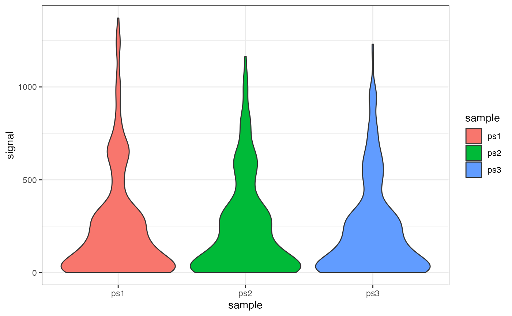

vignettes/AnalyzingMultipleDatasets.Rmd
AnalyzingMultipleDatasets.RmdTo efficiently work with several datasets, we recommend storing the GRanges objects within a standard, named list, e.g. grl <- list(a_rep1 = gr1, b_rep1 = gr2, ...).
library(BRGenomics)
data("PROseq")
data("txs_dm6_chr4")
# make 3 datasets
ps1 <- PROseq[seq(1, length(PROseq), 3)]
ps2 <- PROseq[seq(2, length(PROseq), 3)]
ps3 <- PROseq[seq(3, length(PROseq), 3)]
# use the "=" assignment in list() to give names to the list elements
ps_list <- list(ps1 = ps1, ps2 = ps2, ps3 = ps3)
names(ps_list)## [1] "ps1" "ps2" "ps3"
ps_list## $ps1
## GRanges object with 15794 ranges and 1 metadata column:
## seqnames ranges strand | score
## <Rle> <IRanges> <Rle> | <integer>
## [1] chr4 1295 + | 1
## [2] chr4 42590 + | 2
## [3] chr4 42595 + | 1
## [4] chr4 42618 + | 1
## [5] chr4 42622 + | 2
## ... ... ... ... . ...
## [15790] chr4 1307114 - | 1
## [15791] chr4 1307122 - | 1
## [15792] chr4 1307300 - | 1
## [15793] chr4 1316537 - | 1
## [15794] chr4 1319369 - | 1
## -------
## seqinfo: 7 sequences from an unspecified genome
##
## $ps2
## GRanges object with 15793 ranges and 1 metadata column:
## seqnames ranges strand | score
## <Rle> <IRanges> <Rle> | <integer>
## [1] chr4 41428 + | 1
## [2] chr4 42593 + | 5
## [3] chr4 42596 + | 1
## [4] chr4 42619 + | 2
## [5] chr4 42652 + | 3
## ... ... ... ... . ...
## [15789] chr4 1307032 - | 1
## [15790] chr4 1307115 - | 2
## [15791] chr4 1307126 - | 1
## [15792] chr4 1307301 - | 1
## [15793] chr4 1318960 - | 1
## -------
## seqinfo: 7 sequences from an unspecified genome
##
## $ps3
## GRanges object with 15793 ranges and 1 metadata column:
## seqnames ranges strand | score
## <Rle> <IRanges> <Rle> | <integer>
## [1] chr4 42588 + | 1
## [2] chr4 42594 + | 2
## [3] chr4 42601 + | 1
## [4] chr4 42621 + | 1
## [5] chr4 42657 + | 1
## ... ... ... ... . ...
## [15789] chr4 1307075 - | 1
## [15790] chr4 1307120 - | 1
## [15791] chr4 1307283 - | 1
## [15792] chr4 1307742 - | 1
## [15793] chr4 1319004 - | 1
## -------
## seqinfo: 7 sequences from an unspecified genomeA named list like the one above can be passed as an argument to nearly every function in BRGenomics, and many functions will automatically return dataframes, or melted dataframes that use the list names as the sample names (which can simplify plotting with ggplot2 or lattice).
Note that BRGenomics does also support the use of GRangesList or CompressedGRangesList classes for grouping multiple datasets. However, care should be taken when using these, as many functions with methods for GRanges objects also have methods for GRangesList objects. Furthermore, GRangesList objects can be automatically coerced into CompressedGRangesList objects, which can lower memory usage but can also incur significant performance penalties.
We can pass our list of GRanges directly to getCountsByRegions to simultaneously count reads for each dataset, and melt the result for plotting with ggplot:
getCountsByRegions(ps_list, txs_dm6_chr4[1:5], ncores = 1)## ps1 ps2 ps3
## 1 1 0 0
## 2 20 22 17
## 3 4 4 5
## 4 36 47 43
## 5 84 90 89
# melt, and use the optional region_names argument
txs_counts <- getCountsByRegions(ps_list, txs_dm6_chr4, melt = TRUE,
region_names = txs_dm6_chr4$tx_name,
ncores = 1)
head(txs_counts)## region signal sample
## 1 FBtr0346692 1 ps1
## 2 FBtr0344900 20 ps1
## 3 FBtr0340499 4 ps1
## 4 FBtr0333704 36 ps1
## 5 FBtr0333705 84 ps1
## 6 FBtr0100246 1017 ps1## Warning: package 'ggplot2' was built under R version 4.1.2
ggplot(txs_counts, aes(x = sample, y = signal, fill = sample)) +
geom_violin() +
theme_bw()
By using the getCountsByPositions() on several datasets over a single region-of-interest, we can bake our own genome browser shots within R. Using the same region we plotted earlier:
cbp_maxtx <- getCountsByPositions(ps_list, txs_dm6_chr4[135],
melt = TRUE, ncores = 1)
head(cbp_maxtx)## region position signal sample
## 1 1 1 0 ps1
## 2 1 2 0 ps1
## 3 1 3 0 ps1
## 4 1 4 0 ps1
## 5 1 5 0 ps1
## 6 1 6 0 ps1
ggplot(cbp_maxtx, aes(x = position, y = signal)) +
facet_wrap(~sample, ncol = 1, strip.position = "right") +
geom_col(size = 0.5, color = "darkgray") +
coord_cartesian(expand = FALSE) +
labs(title = txs_dm6_chr4$tx_name[135],
x = "Distance from TSS", y = "PRO-seq Signal") +
theme_classic() +
theme(strip.text.y = element_text(angle = 0),
strip.background = element_blank(),
axis.line.x = element_blank(),
axis.ticks.x = element_blank())There is another data structure that is widely supported with BRGenomics, called a multiplexed GRanges. A multiplexed GRanges is a single GRanges object that contains multiple metadata fields containing basepair-resolution coverage data for different datasets. We currently recommend users use lists of GRanges objects, but you might find that multiplexed GRanges objects have performance benefits for your data (notes on this below).
A multiplexed GRanges object can be made using the mergeGRangesData() with option multiplex = TRUE.
ps_multi <- mergeGRangesData(ps1, ps2, ps3, multiplex = TRUE, ncores = 1)
ps_multi## GRanges object with 47380 ranges and 3 metadata columns:
## seqnames ranges strand | ps1 ps2 ps3
## <Rle> <IRanges> <Rle> | <integer> <integer> <integer>
## [1] chr4 1295 + | 1 0 0
## [2] chr4 41428 + | 0 1 0
## [3] chr4 42588 + | 0 0 1
## [4] chr4 42590 + | 2 0 0
## [5] chr4 42593 + | 0 5 0
## ... ... ... ... . ... ... ...
## [47376] chr4 1307742 - | 0 0 1
## [47377] chr4 1316537 - | 1 0 0
## [47378] chr4 1318960 - | 0 1 0
## [47379] chr4 1319004 - | 0 0 1
## [47380] chr4 1319369 - | 1 0 0
## -------
## seqinfo: 7 sequences from an unspecified genomeAs in any GRanges object, the metadata fields are accessible as a dataframe with the mcols() function, and individual columns are accessible with the $ operator.1
mcols(ps_multi)## DataFrame with 47380 rows and 3 columns
## ps1 ps2 ps3
## <integer> <integer> <integer>
## 1 1 0 0
## 2 0 1 0
## 3 0 0 1
## 4 2 0 0
## 5 0 5 0
## ... ... ... ...
## 47376 0 0 1
## 47377 1 0 0
## 47378 0 1 0
## 47379 0 0 1
## 47380 1 0 0
ps_multi$ps1[1:5]
## [1] 1 0 0 2 0This data structure can be passed to most functions in BRGenomics. To be explicit, users should set the field argument, when it exists, to set the datasets for which calculations should be performed:
# for all datasets (all fields), get counts in the first 5 transcripts
getCountsByRegions(ps_multi, txs_dm6_chr4[1:5],
field = names(mcols(ps_multi)),
ncores = 1)## ps1 ps2 ps3
## 1 1 0 0
## 2 20 22 17
## 3 4 4 5
## 4 36 47 43
## 5 84 90 89
# get counts for ps2 dataset only
getCountsByRegions(ps_multi, txs_dm6_chr4[1:5],
field = "ps2", ncores = 1)## [1] 0 22 4 47 90
# if no field is given, most functions will default to using all fields
getCountsByRegions(ps_multi, txs_dm6_chr4[1:5],
ncores = 1)## field not found in dataset.gr; will default to using all fields in dataset.gr## ps1 ps2 ps3
## 1 1 0 0
## 2 20 22 17
## 3 4 4 5
## 4 36 47 43
## 5 84 90 89In our experience with PRO-seq data, and to our surprise, a list of GRanges objects typically outperforms multiplexed GRanges on a typical laptop, despite the theoretical benefits of multiplexing.
In principle, the multiplexed GRanges structure is designed to reduce memory usage and increase performance, but this has not been our experience when dealing with sparse, basepair-resolution data like PRO-seq. Overlapping signal with regions of interest (e.g. in getCountsByRegions() or getCountsByPosition()) is relatively efficient for reasonably sized GRanges objects, and these calculations scale reasonably well with multicore processing. While multiplexing means that signal overlapping only has to be performed once, we’ve found that this is a relatively small benefit in practice that is easily offset by having to do signal calculations on large sparse vectors of signal counts. However, the relative benefits of using lists or multiplexing are likely to depend on the nature of the data being analyzed, as well as well as computer hardware.
While the handling of GRanges data in BRGenomics is relatively fast, the initial importation of bigWig or bedGraph files as GRanges objects remains a noticeable bottleneck. This may be tolerable for interactive workflows, in which data is imported once before undergoing lengthy analysis, but the bottleneck is a significant detriment for users who regularly import data.
To avoid this bottleneck, users can save reusable data structures as binary R files, which effectively save the memory state of R objects. Not only are these objects rapidly reloaded into memory upon importation, but they have the added benefit of saving the user from repeating data formatting.
Any R object can be saved to storage using the saveRDS() function, and re-imported using readRDS().
# save the PRO-seq GRanges for later import
saveRDS(PROseq, file = "~/PROseq.RData")
# save a list of GRanges
saveRDS(ps_list, file = "~/ps_list.RData")
# re-import
ps_list <- readRDS("~/ps_list.RData")The save() and load() commands can also be used to accomplish the same thing, although they work slightly differently.2
The dataframe, by default, is not a base R data.frame, but rather an S4 DataFrame. The distinction isn’t important for end users, and it’s unlikely users will encounter any reason to coerce the class using as.data.frame.↩︎
Unlike the saveRDS()/ readRDS() commands, the read()/load() commands maintain the original name of the objects. For instance, if you save(PROseq, file = "~/ps.RData"), and in a new R session run read("~/ps.RData"), a new object called PROseq will be created in your new environment. (Note that this is the same way that RStudio saves your current working environment to disk, i.e. it saves the entire environment into an RData file, which can then be reloaded, remaking every data object).↩︎